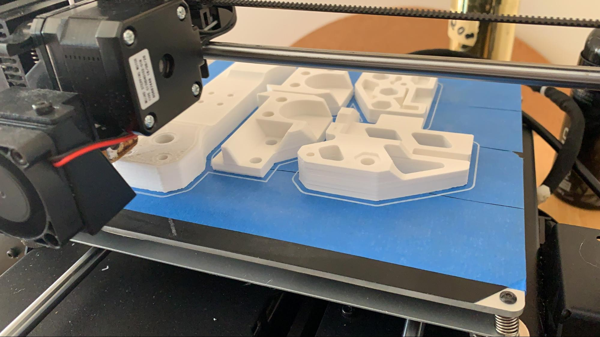

3D printing¶
Advantages of 3D Printing¶
- 3D printing allows teams to have customizable strain relief on wires and connections.
- 3D printing allows for customizable sizing and perfect optimization; for example, teams can print a spool of the exact diameter needed for optimal speed.
- 3D printing allows teams to adapt between kits and individual parts easily, as not all kits have adaptable mounts or brackets. A good example of this are the Nexus mecanum bore adapters that teams 3D print.
- 3D printing allows teams to fabricate parts that would otherwise be impossible with materials such as aluminum due to machining restrictions.
Disadvantages of 3D Printing¶
- If you are out of 3D printed spares at a competition, you’re probably out of luck. Teams are advised to print at least one set of every single 3D printed part as spares for competition.
- 3D printed components are generally weaker than other materials such as aluminum. However, printing in the proper orientation can be very strong - teams have 3D printed hooks and other parts to support their FRC robot (120 pounds) and FTC robots (40 pounds).
- 3D printed parts should only be loaded in one orientation. That is, if the robot is hanging from a hook, the only load should be on the bottom face of the curved part of the hook. Try to eliminate side loads as much as possible to avoid part failure.
- The size of 3D printed parts are limited by the size of your print bed.
- Large and thick prints can take a long time (overnight) to print and can run the risk of failure.
- 3D printing can end up quite expensive, though filament can be found for a reasonable price on online vendors such as Amazon.
Common Filament Types¶
- PLA (polylactic acid) is a common filament that does not require a heated bed. PLA is stiff but more brittle than other filament options, and tends to have little to no warp when printing. PLA should be used for low or no load applications such as electronics retention mounting or cable management.
- ABS (acrylonitrile butadiene styrene) is another very common filament that is able to withstand higher temperatures than PLA. It is less brittle and more ductile than PLA, making it better for 3D printed parts that may be under load. Typically, ABS is used in higher-load applications such as 3D printed bores for mecanum wheels.
- PET/PETG (polyethylene terephthalate) can be described as a mix of PLA and ABS. It has little warp and is as durable as ABS. PETG is another great option for higher-load applications such as wheel bores.
- TPU (thermoplastic polyurethane) is a filament different from other options. Specifically, parts made with TPU can be flexible if the infill is set low, or by using flexible TPU filament. Teams use TPU to print customized intake flaps optimized for the right stiffness in order to make the intake more efficient. TPU also has very high layer bonding strength compared to other filament types, making it suitable for high load applications that do not need to be stiff. Must print TPU on a printer with a direct extruder, will not work on bowden extruders. A bowden extruder is mounted on the frame of the 3D printer and is connected to the nozzle with a flexible tube that guides the filament. A direct extruder will be mounted directly on the nozzle assembly, with filament feeding directly into the nozzle.
3D Printing Design Guide¶
The first consideration when designing 3D printed parts is print orientation. This refers to the side that contacts the print bed. Preferably, the part should have a flat bottom to maximize contact with the print bed. Maximizing contact with the print bed will make sure the part doesn’t delaminate or warp from the bed and increase print quality.
If it is impossible for the part to have a flat side to print on, a simple solution is to split the part into multiple parts along a plane. For instance, the gearbox plate below didn’t have a flat side to print on, so it was split in half. The part was later sandwiched with numerous screws and plastic glue. If this plate was printed as one part instead of split in half, support would have to be used to create all of the necessary holes. Parts that use no support material make sure that the least amount of plastic is wasted.

Another tip with the bottom side of a printed part is to not chamfer or round anything on the perimeter of the first layer. Chamfering or rounding will increase the chances of the part warping especially on unheated print plates.
Draft Angle¶
Draft angle refers to the overhang angle between the part side and normal vector from the print plate. The maximum draft angle refers to the maximum angle the printer can print without support material and is based on the printer, print settings (notably speed, temperature and cooling) and filament type. When trying to decrease support material, consider every overhang angle and make sure it is within the maximum draft angle. Staying within the maximum draft angle will also decrease the chances of part warping.
Stress Vectors¶
Perhaps the most important consideration are stress vectors. 3D printed parts are inherently stronger on two axes and weaker on one axis. The weaker axis comes from the layering action that defines FDM 3D printing. A common fix to this is to simply increase the print temperature up to a certain limit until it starts decreasing print quality, but the weaker axis can be resolved by again splitting up into multiple parts. The point to get across is to try to increase strength by optimizing sections of the part on the plane they are being printed on. For instance, this assembly below was responsible for hanging the entire robot, so it had to be the maximum strength possible for a 3D printed part. It might seem counterintuitive to split up a part into multiple parts to increase strength, but there is a logic behind it. The part could have been easily printed as a single part, but it would be fairly weak when stresses are exerted in the upward direction. Splitting the part and creating new flat surfaces to print on will strengthen each axis. If one small part failed, the robot might still be able to somewhat function. This would be preferable to the entire piece failing at once. In this example the side pieces were printed as separate parts on a complementary axis to strengthen the assembly.
{kind=link}

This assembly is a good example of considering part orientation, draft angles, and stress vectors in each part of the design. Complex parts can be made strong and without any support by simply splitting it up in the right way.